关于体重从 91kg 到 75kg这件小事
一、发现一项适合的运动：骑行
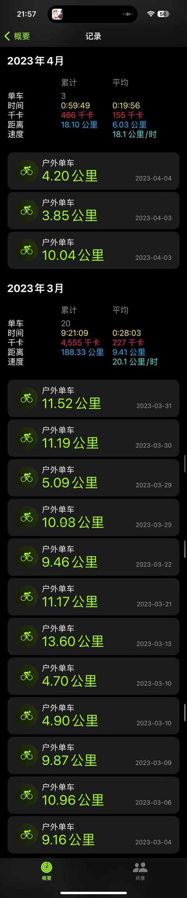
是从去年 3 月份开始骑车，正好之前有买过一辆公路车一直闲置着，简单给轮胎充充气，清理下之后就开始骑了，感受不错。
特别适合饭后，如果吃完饭觉得肚子有点撑，骑行20 多分钟可能就完全没有撑的感觉，如果用走路的方式，没有 30 分钟肯定不行。
特别提醒：
骑自行车、电动车之类的，一定佩戴好头盔且正确佩戴！
现在即使是骑车 2km 去买菜，都会带上眼镜、头盔、手套，把安全措施做的尽量的全，白天骑车也会把尾灯打开，增加被识别到的概率。
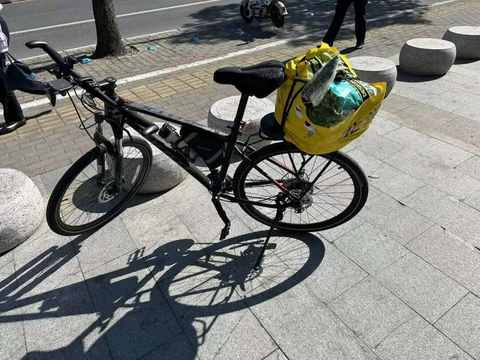
二、实践出真知：能通过控制饮食维持体重
在 2023 年的 5 月份之前，对三分练七分吃和控制饮食能减少体重这句广为流传的话语有比较强的怀疑。对于七分饱之类的表述更是没有体感，饱了在我的字典里面估摸着得接近吃的有点撑。
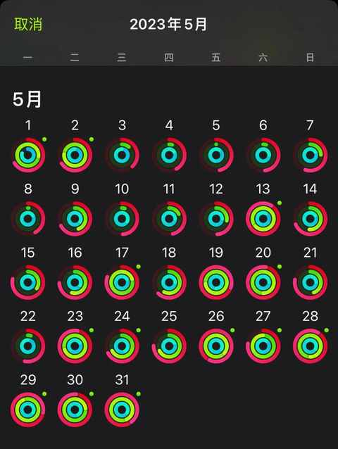
经过 5 月份一整个月的实践和记录体重，发现即使运动量偏低，一日三餐正常吃，但同时控制好食物的摄入，大部分时候都吃七八分饱，米饭减半，一个月下来体重并没有增加，实践证明，控制饮食有效！
三、不宜过多的减少碳水摄入：会显老！
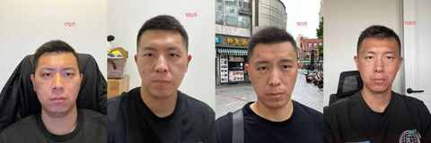
通过错误的方式，很努力地减肥几个月之后，体重降低了，人也显得老了
，增添不少不知道从哪里来的沧桑感。
通过错误的方式，很努力地减肥几个月之后，体重降低了，人也显得老了 ，增添不少不知道从哪里来的沧桑感。
四、早点找教练：在专业人士的辅导下能更快进步

左边是去年 10 月份的时候大概 78kg的状态，右边是和教练一起练了接近 5 个月大概 75kg的状态，上课频次是一周两次。
五、保持学习：特别健身方面的、饮食方面的、运动健康方面的
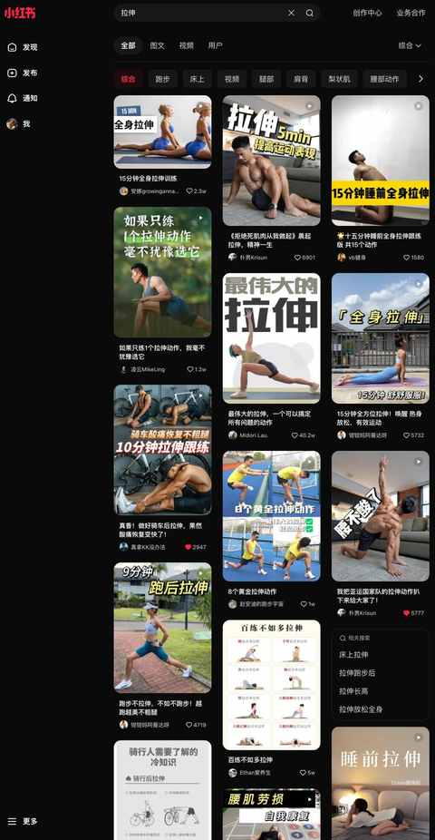
强烈安利小红书网页版，检索速度快，内容质量好，内容涵盖广。
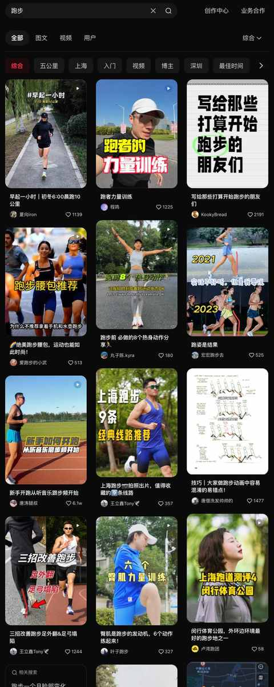
六、简化方案：更易执行更快有效果
热量缺口在很多科普减肥的内容里面都会涉及到，减体重的底层逻辑就是要在相当长的一段时间里面都能创造出来热量缺口，然后体重就会必然下降，会瘦。
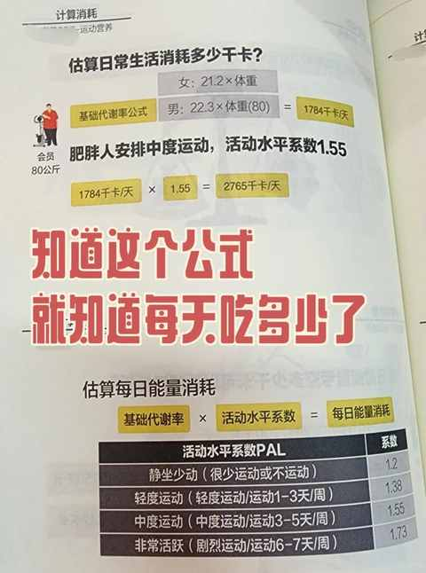
相较于每一餐都想去少吃一些，还不如把主要的创造热量缺口的方式聚集于一日三餐中的某一餐。
例如：
中餐米饭减半
晚餐多吃蔬菜水果
早餐不吃油炸食物
爱喝牛奶，从全脂换成脱脂的
零食从饼干换成玉米、红薯、紫薯等
……
能不过度的耗费精力和时间而坚持下去的方案最适合前期。
七、回归本质：一切都是为了健康
1. 基于了解身体数据的角度： 需定期称重
最好备一个体脂秤，能了解到身体的各项指标，不需要数据多么准确，但能看到具体的趋势是上升还是下滑。
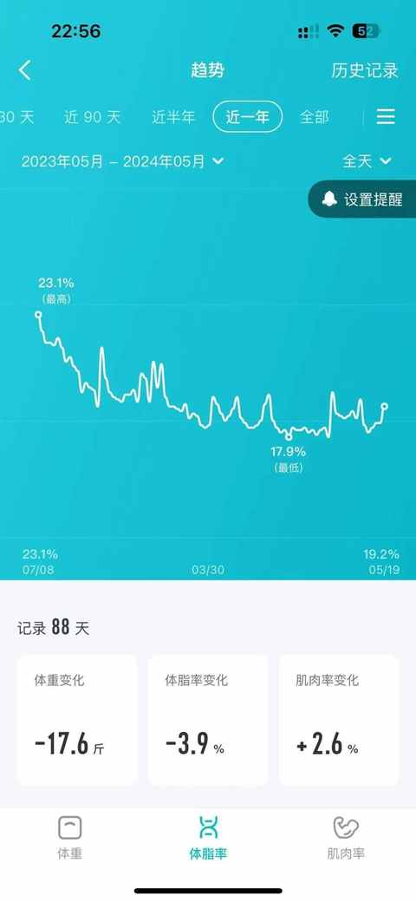
2. 基于中国居民膳食指南的角度： 饮食多样性很重要
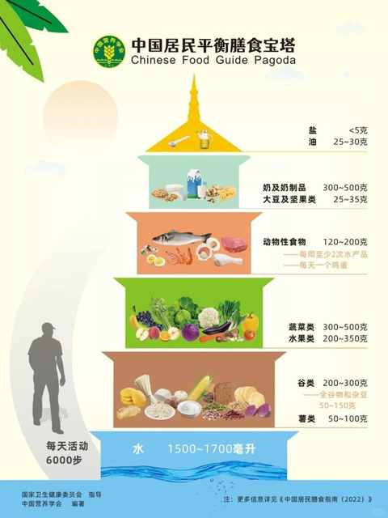
水果要吃、各种肉要吃、鸡蛋要吃、蔬菜要多多吃，另外各种杂粮也值得尝试
3. 基于老年生活的角度：减缓肌肉流失，最好同时也做能 增肌的运动
随着年龄的增长，运动量的减少，肌肉会慢慢流失，但合理的运动和饮食能延缓这个过程。
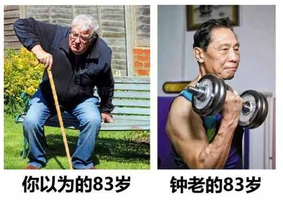
八、做时间的朋友：让一切自然发生
自己是很难感觉清晰的到瘦了，但常穿的衣服会。
当辅导班的老师问你怎么瘦了，说明首战告捷！
虽然已经取得阶段性进展，但接下来的路更难，但我们能更坚定地走下去。
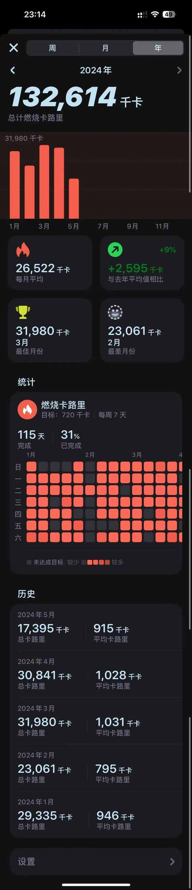